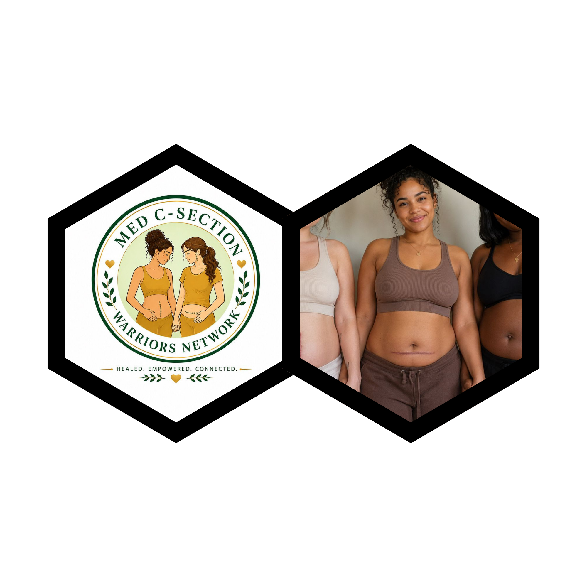

Emotional Support Program
Safe spaces, group circles, and counseling referrals for mothers healing after cesarean birth.
Programs and opportunities
Explore the services, memberships, partnerships, and ways to contribute.
Programs
Safe spaces, group circles, and counseling referrals for mothers healing after cesarean birth.
Workshops on recovery, wellness, postpartum care, and newborn support.
Programs that challenge stigma and promote respectful maternity care in families and workplaces.

Become part of a growing community of mothers, healthcare professionals, partners, researchers, volunteers, and advocates across the globe working together to improve maternal healthcare.
We welcome collaborations with hospitals, midwives, obstetricians, NGOs, universities, employers, and community leaders.
Support scholarships, care packages, training, and outreach that help women recover with dignity and confidence.
Your support enables us to reach vulnerable mothers, organize support groups, and advocate for better maternal policies.
Women are finding strength, confidence, and belonging through peer support and advocacy networks.
Dear All, You are dearly invited for our very first FOUNDING MEMBERS DINNER for the formation of our NGO *MED C-SECTION WARRIORS NETWORK* aiming at *educating*, *empowering*, *advocating* and *supporting* C-section MOMs with an inclusion of all mothers through postpartum and recovery journey and preparing young mothers to be and for this cause I would like to officially invite you to come through for our founding members dinner on *1st* *September* *2026* Herewith your invitation and ticket for the event. Kindly note that this dinner is only for mums and young ladies We look forward to host you and celebrate this noble and common cause with you.